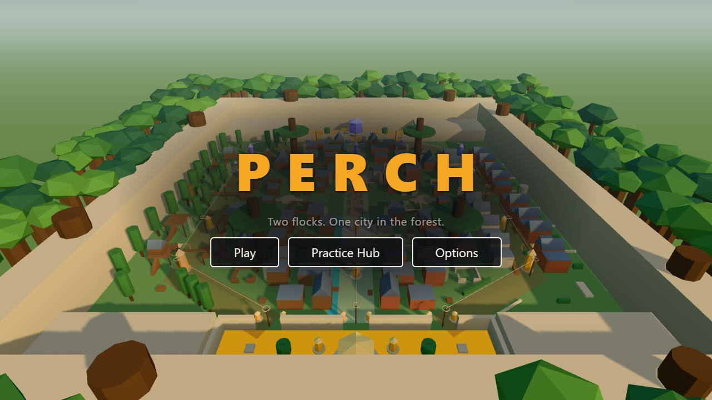
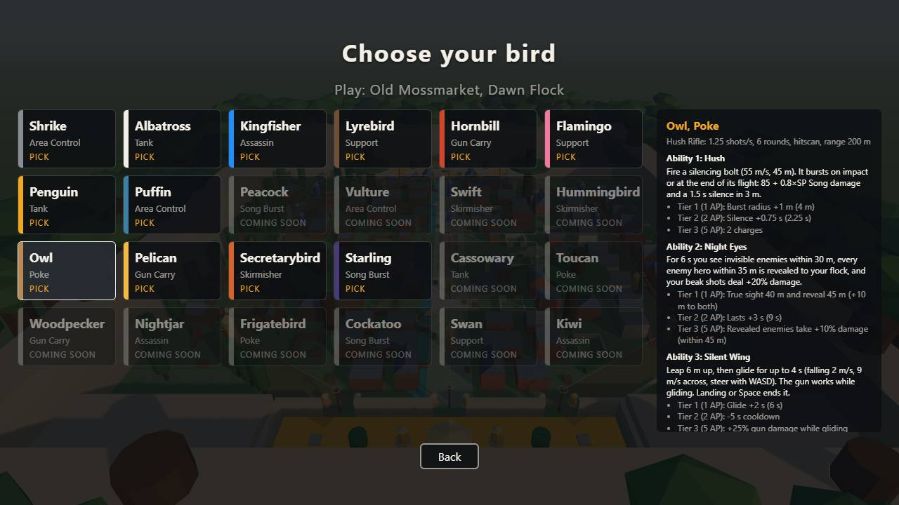
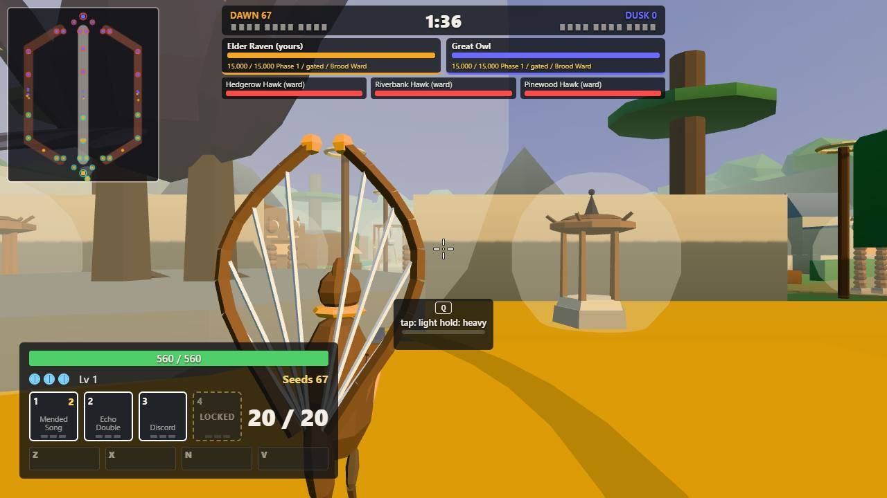
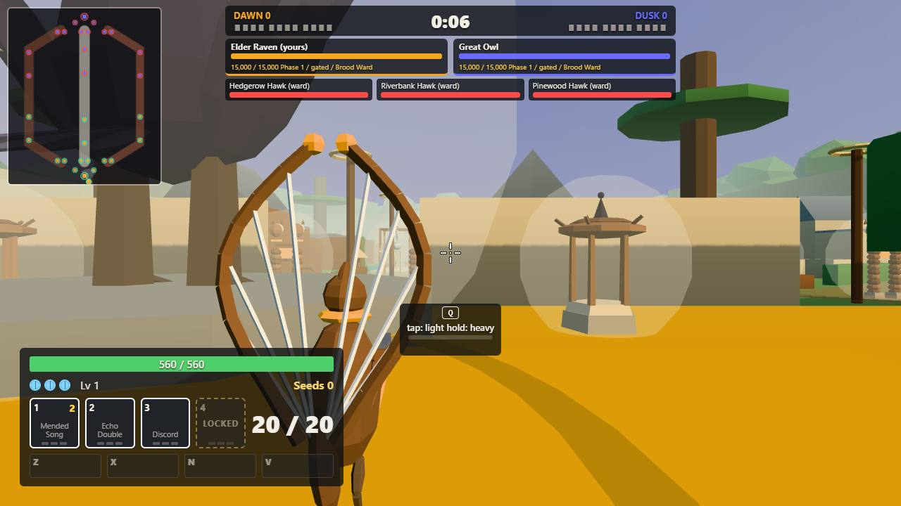
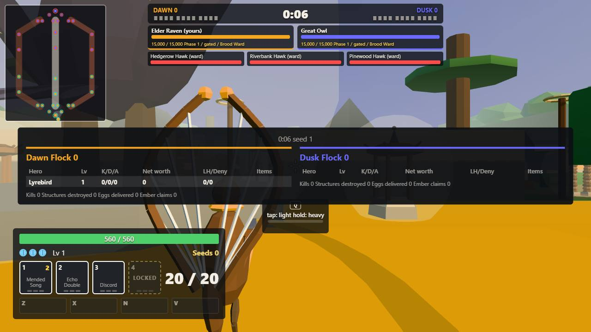
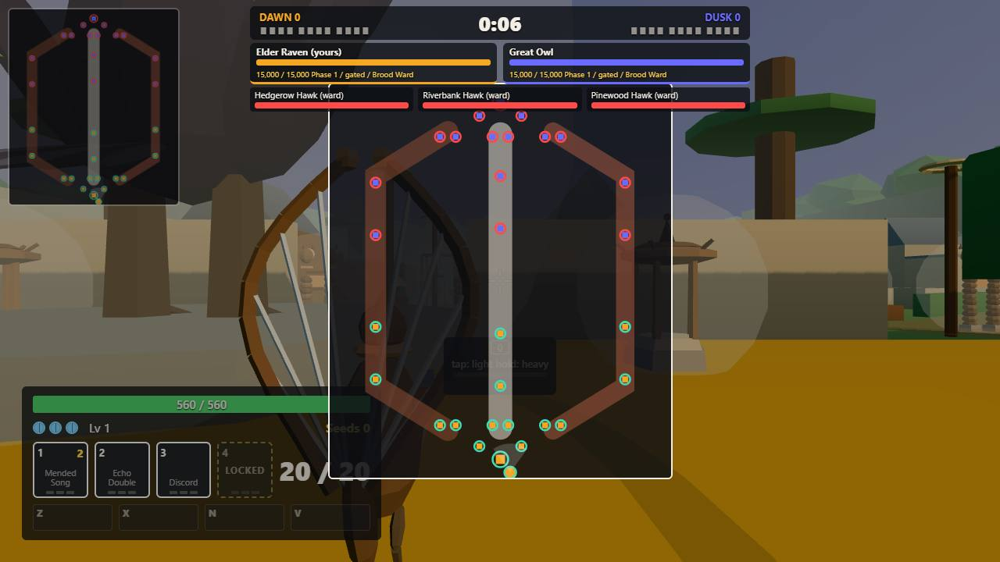
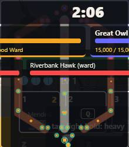
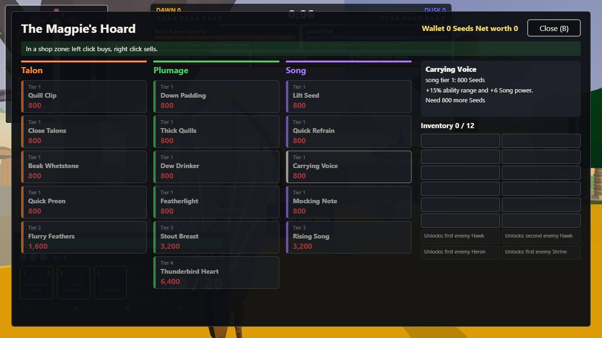

Getting started
Install and launch
You need Node.js (a current release) and a recent Chrome or Edge. Firefox also works, with a few limits described under Controls.
- In the project folder, run
npm installonce. - Run
npm start. It builds the game, serves it on your computer and opens your browser on the main menu. - Stop it with Ctrl+C in the terminal.
To skip the menus while testing, open the game with a scene in the address, for example ?scene=lane&hero=shrike.
Your first match
- Click Play, then pick a bird whose card says Pick. See Heroes for what each one does.
- You start in your Dawn base. Click in the game once to capture the mouse, then move with the movement keys and look with the mouse.
- Fledglings leave both bases in waves and march down three lanes. Shoot enemy fledglings, and shoot their seed pods to secure Seeds: see Economy.
- Open the Hoard in your base to buy items, and open the upgrade panel to spend Ability Points: see The Magpie's Hoard.
- Push a lane, destroy the towers, and break the enemy Patron to win: see Units and objectives.


The screen






Where next
- Controls: every key, and how Ctrl crouch works.
- Options: rebinding keys and tuning the game.
- Game modes: practice match, Practice Hub and planned bot matches.
- Movement: what a bird can do beyond walking.